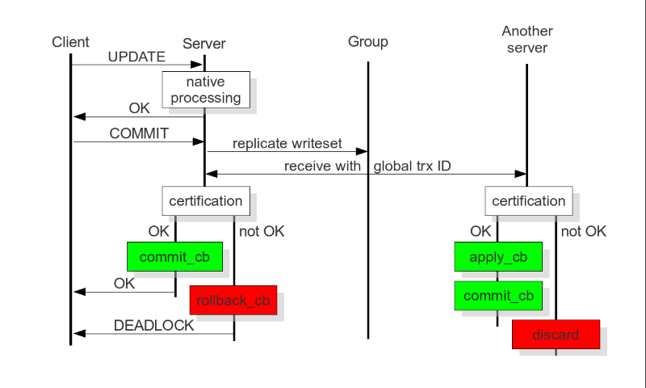

galera
Table of Contents
1 galera
1.1 Links & Abbr.
Code
- https://code.launchpad.net/~codership/wsrep/trunk
- https://code.launchpad.net/~codership/galera/3.x
- https://code.launchpad.net/~codership/codership-mysql/5.6
Official
- Index http://www.codership.com/wiki/doku.php
- Reference http://www.codership.com/wiki/doku.php?id=reference
- FAQ http://www.codership.com/wiki/doku.php?id=faq
- HowTo http://www.codership.com/wiki/doku.php?id=howto
- Blog http://www.codership.com/en/blog
Misc(in Chinses)
- http://blog.chinaunix.net/uid-25206403-id-3912291.htm
- http://www.cnblogs.com/bamboos/p/3543309.html
- http://blog.gslin.org/archives/tag/galera/
Abbr.
- pxc(percona xtradb cluster)
- sst(snapshot state transfer)
- ist(incremental state transfer)
- pc(primary component)
- rbr(row-based replication)
- sbr(statement-based replication)
- mst(multi segment transaction)
Info.(@2012)
- Galera Cluster for MySQL
- 5 years development (started at 2007)
- based on MySQL server community edition
- Fully open source
- Active community
- Galera Replication also used in:
- Percona XtraDB Cluster
- MariaDB Galera Cluster
- Technology and support partners:
- Percona
- SkySQL
- FromDual
- Monty Program
- Capside
- Severalnines
1.2 wsrep API Annotation
1.2.1 file layout
- wsrep_api.h # header
- wsrep_loader # load/unload wsrep_t
- symbol=wsrep_loader
- type=int wsrep_loader_fun(wsrep_t*)
- wsrep_dummy # example or stub
- wsrep_uuid # uuid helper
- wsrep_gtid # gtid helper
- wsrep_listener # event dumper, helpful to get whole picture.
- http://www.codership.com/wiki/doku.php?id=notification_command # NOTE（dirlt）：helpful？
1.2.2 concept
- sst(snapshot state transfer)
- ist(incremental state transfer)
- logger
- provider
- CAP(certain provider capabilities)
- flags
- status
- uuid/gtid
- UUID 节点状态改变及顺序的唯一标识 NOTE（dirlt）：集群建立之初的状态标记？
- GTID Global Transaction ID, 由UUID和偏移量组成 NOTE（dirlt）：以UUID为base，每次事务通过偏移量反应
- example: 45eec521-2f34-11e0-0800-2a36050b826b:94530586304
- undefined: 00000000-0000-0000-0000-000000000000:-1
- evolve: 00295a79-9c48-11e2-bdf0-9a916cbb9294:0 => 00295a79-9c48-11e2-bdf0-9a916cbb9294:1
- group member（节点成员信息）
- group view(视图信息，比如整个集群有多少个节点，每个节点同步进度如何？）
- wsrep_init_args(arguments)
- wsrep_t(interface)
- Replication provider library
- load/unload
- configuration
- status
- Write set
- population calls
- replication calls (at commit)
- Prioritized transactions
- Lock queue modified
- Aborting local victims
- TO isolation for DDL queries
1.2.3 wsrep_init_args
NOTE（dirlt）；这个应该是和上层相关的实现比如MySQL，如何apply, commit等
- (D)app_ctx 回调使用的context
- (D)node_name 当前节点/实例名称，对应变量wsrep_node_name
- (D)node_address 当前节点/实例地址，对应变量wsrep_node_address
- (D)node_incoming 对应变量wsrep_incoming_addresses 可以接受连接请求的节点
- (D)data_dir 当前数据库的目录，对应变量wsrep_data_home_dir
- (D)options 选项
- (D)proto_ver 协议版本
- (D)state_id 应用初始状态id
- (D)state 应用初始状态数据
- logger_cb 打印日志回调（mysql来如何打印记录）
- view_handler_cb group vier变化回调
- apply_cb
- commit_cb
- unordered_cb 顺序无关操作
- sst_donate_cb 开始贡献
- synced_cb 和group做同步
1.2.4 wsrep_t
NOTE（dirlt）：这个应该是和下层相关的实现比如Galera，它定义了整个replication的逻辑
- (D)version 版本
- init 初始化 wsrep_init_args
- capabilities 支持功能
- options_set 设置选项
- options_get 获取选项
- connect 建立和集群的连接
- disconnect 断开和集群的连接
- recv 开始接收replication event. 正常情况下这个函数一直运行，期间执行其他操作，如果返回的话那么表明出错或者是退出。
- pre_commit 事务提交之前 （NOTE：向集群提交验证？）
- post_commit 事务提交之后
- post_rollback 事务回滚之后
- replay_trx 回放事务（自身回放事务）
- abort_pre_commit 中断事务提交之前
- append_key 将key添加到事务ws. 修改行对应的key，可以用来检测冲突。
- append_data 将data添加到事务ws. 修改行对应的value。
- casual_read TODO（dirlt）：
- free_connection 释放链接
- to_execute_start 开始执行total order isolation事务（上锁）
- to_execute_end 结束执行total order isolation事务（解锁）
- preordered_collect 将预先排序的event收集到ws
- preordered_commit 将收集的ws commit到集群中
- sst_sent sst sst已经发送完毕
- sst_received sst已经接收完毕
- snapshot 请求产生snapshot
- stats_get 获取统计数据
- stats_free 释放统计数据
- stats_reset 重置统计数据
- pause 停止提交
- resume 恢复提交
- desync 断开集群同步
- resync 建立集群同步
- lock 获取全局锁
- unlock 释放全局锁
- is_locked 检测全局锁
- (D)provider_name 名称
- (D)provider_version 版本
- (D)provider_vendor 厂商
- free 释放句柄
- (D)dlh dlopen句柄
- (D)ctx 私有句柄，内部使用
1.3 Patched MySQL(mysql-wsrep) 5.6
1.3.1 wsrep callbacks
- logger_cb # mysql如何打印galera日志
- view_handler_cb # 新节点加入会比较本地状态uuid和集群状态uuid. 初始同步，joiner动作
- apply_cb # mysql如何执行binlog
- commit_cb # mysql如何提交事务
- unordered_cb # NOTE（dirlt）：do nothing?
- sst_donate_cb # 初始同步，donor动作
- synced_cb # mysql启动等待状态一致之后会调用这个函数，修改变量wsrep_ready从OFF到ON
1.4 Replicator Architecture

- 完成事务在集群内的广播
- 应用从其他节点接收并全局验证通过的事件到本地
- 集群内通信，节点存活的检测，pc的选举
- 多点写入时的锁冲突检测机制
- 等待队列中事务的并发提交
- Group Communication层实现统一全局数据同步策略和集群内所有事务的排序，便于生成GTID。
- Galera cluster is built on top of a proprietary group communication system layer which implements virtual synchrony QoS.
- Virtual synchrony unifies data delivery and cluster membership service which gives clear formalism regarding message delivery semantics.
- It also provides total ordering of messages from multiple sources which is very handy in building global transaction IDs in multi-master cluster.
- 节点接收请求后在commit之前，由wsrep API调用galera库进行集群内广播，所有其他节点验证（certification）成功后事务在集群所有节点进行提交，反之roll back。
- Replication层完成数据同步，由slave queue和applier组成，在事务的同步过程中，事务在队列中以及应用线程中时于节点本地产生锁冲突处理方式。效率直接影响整个集群的写入性能。

在数据库事务提交时，会使用2阶段提交方式，在ha_trans_commit中，首先会针对每一个存储引擎执行一个ht->prepare函数，而对于Galera，在内部实现也是当作一个内嵌的存储引擎使用的，所以它执行的是wsrep_prepare，这个函数的功能是将在执行过程中产生的binlog通过下面会介绍到的接口append_data传到其它节点上面去（或者没有传过去，只是将这些数据对象存储在本地，等待提交操作），然后再通过下面这个接口pre_commit去与其它节点的Galera通讯检查有没有冲突，这个过程也就是在 介绍Galera的文章中说到的certification阶段 。 NOTE(dirlt):是在本地先提交吗？
- Transactions process independently in each cluster node
- Transaction write sets will be replicated at commit time
- Cluster wide conflicts resolved by certification test
1.5 Synchonization Mechanism
1.5.1 Virtual Synchrony
1.5.2 Finite State Machine
- http://www.codership.com/wiki/doku.php?id=galera_node_fsm
- http://www.codership.com/wiki/doku.php?id=node_failure
- http://www.codership.com/wiki/doku.php?id=node_provisioning_recovery
- Node establishes connection to a primary component.
- Node succeeds in state transfer request. It starts to cache the writesets.
- Node receives state snapshot. Now it has all cluster data and can start applying the cached writesets. Flow control is turned on to ensure eventual slave queue decrease.
- Node completes catching up with the cluster (slave queue is empty). Flow control is turned on to keep slave queue empty. In MySQL wsrep_ready status variable is set to 1 and the node is allowed to process transactions.
- Node receives state transfer request. Flow control is relaxed as for JOINER. The node caches the writesets it can't apply.
- Node completes state transfer to joiner.
For clarity the following transitions were omitted from the graph:
- At any time, cluster configuration change event can send the node to PRIMARY or OPEN state, e.g. SYNCED -> OPEN when a node loses connection to primary component due to network partition.
- If the node does not need a state transfer (e.g. node restart in an idle cluster) it goes straight PRIMARY -> JOINED.
options:
- wsrep_new_cluster # setup a new cluster
- wsrep_cluster_address=gcomm://192.168.0.1 # Once you have a cluster running and you want to add/reconnect another node to it, you must supply an address of one of the cluster members in the cluster address （只需要指定任意一个地址即可） The new node only needs to connect to one of the existing members. It will automatically retrieve the cluster map and reconnect to the rest of the nodes.
1.5.3 Flow Control
http://www.codership.com/wiki/doku.php?id=flow_control
- wsrep_flow_control_sent = #times node has begged for flow control
- wsrep_flow_control_recvd = #times node received flow control stop signal
- wsrep_flow_control_paused = fraction of time the node had to pause for flow control
- wsrep_local_recv_queue = length of slave queue
- Gcs.fc_limit = high water mark for the flow control, FC stop will be sent when this is reached
- Gcs.fc_factor = limit * factor is the low water mark, FC continue will be sent when slave queue returned down to this mark
1.5.4 Writeset Cache
http://www.codership.com/wiki/doku.php?id=gcache
Swap Size Requirements
During normal operation MySQL/Galera node does not consume much more memory than a regular MySQL server. Additional memory is consumed for certification index and uncommitted writesets, but normally this should not be noticeable in a typical application. There is one exception though: （维护certification index以及没有提交的writeset)
Writeset caching during state transfer. When a node is receiving a state transfer it cannot process and apply incoming writesets because it has no state to apply them to yet. Depending on a state transfer mechanism (e.g. mysqldump) the node that sends state transfer may not be able to apply writesets as well. Thus they need to cache those writesets for a catch-up phase. Currently the writesets are cached in memory and, if the system runs out of memory either state transfer will fail or the cluster would block waiting for the state transfer to end.(在state transfer阶段，donor是不可以写入的，所以在这期间需要缓存所有到达的writeset)
To control memory usage for writeset caching, check Galera parameters: NOTE（dirlt）：by flow control
- gcs.recv_q_hard_limit,
- gcs.recv_q_soft_limit,
- gcs.max_throttle.
1.5.5 Snapshot Transfer
(SST)State Snapshot Transfer
- http://www.codership.com/wiki/doku.php?id=sst_mysql
- http://www.codership.com/wiki/doku.php?id=scriptable_state_snapshot_transfer
(IST)Incremental Snapshot Transfer
三种方式sst,通过wsrep_sst_method变量配置
- mysqldump => wsrep_sst_mysqldump
- Logical backup
- Slowest method
- Configure authentication
- wsrep_sst_auth=”root:rootpass”
- Super privilege needed
- Make sure SST user in donor node can take mysqldump from donor and load it over the network to joiner node(You can try this manually beforehand)
- rsync => wsrep_sst_rsync
- Physical backup
- Fast method
- Can only be used when node is starting
- Rsyncing datadirectory under running InnoDB is not possible
- xtrabackup => wsrep_sst_xtrabackup
- Contributed by Percona
- Probably the fastest method
- Uses xtrabackup
- Least blocking on Donor side (short readlock is still used when backup starts)
There are two conceptually different ways to transfer a state from one MySQL server to another:
- Using mysqldump. This requires the receiving server to be fully initialized and ready to accept connections before the transfer. This method is by definition blocking, in that it blocks donor server from modifying its own state for the duration of transfer. It is also the slowest of all, and in the loaded cluster that might be an issue in a loaded cluster.（使用mysqldump。要求在transfer之前配置好。会阻塞donor操作，速度比较慢，高负载情况下会有问题）
- Copying data files directly. This requires that the receiving server is initialized after the transfer. rsync, xtrabackup and other methods fall into this category. These methods a much faster than mysqldump, but they have certain limitations, like they can be used only on server startup and receiving server must be configured very similarly to the donor (e.g. innodb_file_per_table should be the same and so on). Some of these methods, e.g. xtrabackup, can be potentially made non-blocking on donor.（直接copy文件。要求transfer之后配置好？？速度比较快，但是要求配置源和目的配置相同。使用xtrabackup不会阻塞donor)
- Xtrabackup and rsync SST cannot be used for a running server. It is not possible to copy datafiles under running InnoDB. Having wsrep_address set to a list of node addresses and starting replication on a running node can lead to node crash. TODO（dirlt）：Xtrabackup需要停机处理吗？ NOTE（dirlt）：xtrabackup不需要停机处理
SST Donor
- All SST methods cause some disturbance for donor node
- By default donor accepts client connections, although committing will be prohibited for a while
- If wsrep_sst_donor_rejects_queries is set, donor gives unknown command error to clients
- Best practice is to dedicate a reference node for donor and backup activities（使用单独一台机器来做参照节点，这个机器上面没有负载，可以用作备份以及donor)
IST(Very effective)
- If joining node had some previous state and gcache spans to that, then IST can be used.
- Gcache is mmap, available disk space is upper limit for size allocation. 'gcache.size' parameter defines how big cache will be maintained.
- A short asynchronous replication session. If communication is bad quality, node can drop and join back fast with IST.
1.5.6 Parallel Applying
- Galera assigns non-conflicting WS tasks to parallel appliers
- Works not on database, not on table, but on row level
- Applier threads launched at MySQL startup.
- wsrep_slave_threads=n
- Optimal applier count depends on work load
- Monitor wsrep_cert_deps_distance
- Max ~4 * #CPUcores
1.5.7 Primary Component
1.5.8 Online Schema Upgrade
http://www.codership.com/wiki/doku.php?id=rolling_schema_upgrade
DDL is non-transactional, and therefore bad for replication. Galera has two methods for DDL
- TOI, Total Order Isolation
- RSU, Rolling Schema Upgrade
Use wsrep_osu_method to choose either option. ALTER TABLE to create new autoinc column will cause issues. Every node has different autoinc incrementand offset settings.
Total Order Isolation （DDL同步在所有节点上，期间屏蔽操作）
- DDL is replicated up-front
- Each node will get the DDL statement and must process the DDL at same slot in transaction stream
- Galera will isolate the affected table/database for the duration of DDL processing
Rolling Schema Upgrade （节点首先desync，DDL作用在节点上之后，然后resync）
- DDL is not replicated
- Galera will take the node out of replication for the duration of DDL processing
- When DDL is done with, node will catch up with missed transactions (like IST)
- DBA should roll RSU operation over allnodes
- Requires backwards compatible schema changes

1.6 Certification Based Replication
1.6.1 Introduction
Certification based replication uses group communication and transaction ordering techniques to achieve synchronous replication. Transactions execute optimistically in a single node (or replica) and, at commit time, run a coordinated certification process to enforce global consistency. Global coordination is achieved with the help of a broadcast service, that establishes a global total order among concurrent transactions. (基于 组通信 以及 事务顺序化 技术来达到同步备份。事务首先是乐观地在本地执行，然后提交给其他节点做验证来保证全局一致性）
Pre-requisites for certification based replication: NOTE（dirlt）：that's why InnoDB is choosen？
- database is transactional (i.e. it can rollback uncommitted changes)（数据库必须支持事务）
- each replication event changes the database atomically（备份事件要能够原子性执行）
- replicated events are globally ordered (i.e. applied on all instances in the same order)（必须全局有序）
The main idea is that a transaction is executed conventionally until the commit point, under the assumption that there will be no conflict. This is called optimistic execution. When the client issues a COMMIT command (but before the actual commit has happened), all changes made to the database by the transaction and the primary keys of changed rows are collected into a writeset. This writeset is then replicated to the rest of the nodes. After that, the writeset undergoes a deterministic certification test (using the collected primary keys) on each node (including the writeset originator node) which determines if the writeset can be applied or not. If the certification test fails, the writeset is dropped and the original transaction is rolled back. If the test succeeds, the transaction is committed and the writeset is applied on the rest of the nodes.（在本地首先乐观执行，然后在COMMIT时候将修改的writeset通过到其他节点做certification判断是否会产生冲突. 如果失败的话那么本地事务回滚而且放弃writeset, 如果成功的话那么本地事务提交并且通知将writeset作用在其他节点上）
The certification test implemented in Galera depends on the global ordering of transactions. Each transaction is assigned a global ordinal sequence number during replication. Thus, when a transaction reaches the commit point, it is known what was the sequence number of the last transaction it did not conflict with. The interval between those two numbers is an uncertainty land: transactions in this interval have not seen the effects of each other. Therefore, all transactions in this interval are checked for primary key conflicts with the transaction in question. The certification test fails if a conflict is detected. Since the procedure is deterministic and all replicas receive transactions in the same order, all nodes reach the same decision about the outcome of the transaction. The node that started the transaction can then notify the client application if the transaction has been committed or not. （每个事务提交都会分配一个全局有序id。如果这个id是当前最新id的话，那么就可以直接提交，否则需要检查id+1到最新id区间的writeset和当前id是否存在冲突，那么验证会失败） TODO（dirlt）：xid 和 [xid+1, lastest-id]做验证，如果冲突的话，是放弃xid还是[xid+1, lastest-id]其中冲突的部分？我觉得应该是xid!
Database Hot-Spots
- Some rows where many transactions want to write to simultaneously（行冲突）
- Patterns like queue or ID allocation can be hot-spots（ID分配）
Certification based replication (or more precisely, certification-based conflict resolution) is based on academic research, in particular on Fernando Pedone's Ph.D. thesis http://www.inf.usi.ch/faculty/pedone/Paper/199x/These-2090-Pedone.pdf
1.6.2 Consistent read(read causality)
There is causal dependency between operations on two database connections:
- One thread does a database operation
- And some other thread is expecting to see the values of earlier write
wsrep_causal_reads=ON Every read (select, show) will wait until slave queue has been fully applied. There is timeout for max causal read wait: replicator.causal_read_keepalive
1.6.3 Multi-Master Conflicts
Galera uses optimistic concurrency control:
- If two transactions modify same row on different nodes at the same time, one of the transactions must abort. Victim transaction will get deadlock error
- Application should retry deadlocked transactions, however not all applications have retrying logic inbuilt.
Diagnosing Multi-Master Conflicts:
- wsrep_log_conflicts will print info of each cluster conflict in mysql error log
- Cert.log_conflicts to print out information of the conflicting transaction
- Status variables to monitor:
- wsrep_local_bf_aborts
- wsrep_local_cert_failures
- by using wsrep_debug configuration, all conflicts (…and plenty of other information) will be logged
Retry Autocommit:
- Galera can retry autocommit transaction on behalf of the client application, inside of the MySQL server
- MySQL will not return deadlock error, but will silently retry the transaction
- wsrep_retry_autocommit=n will retry the transaction n times before giving up and returning deadlock error
- Retrying applies only to autocommit transactions, as retrying is not safe for multi-statement transactions
1.7 Miscellaneous
1.7.1 Parameters
1.7.2 Status Variables
http://www.codership.com/wiki/doku.php?id=galera_status_0.8
- mysql> SHOW STATUS LIKE 'wsrep_%';
1.7.3 Configuration
http://www.codership.com/wiki/doku.php?id=configuration_tips
- wsrep_provider # a path to Galera library.
- wsrep_cluster_address # cluster connection URL.
- binlog_format=ROW # TODO(dirlt):??
- default_storage_engine=InnoDB
- innodb_autoinc_lock_mode=2 # TODO(dirlt):??
- innodb_flush_log_at_trx_commit=2 # TODO(dirlt):??
- innodb_doublewrite=1 #TODO(dirlt):??
1.7.4 Monitoring
1.7.5 Notification
Cluster can trigger notifications. Use for:
- load balancer configuration
- monitoring
wsrep_notify_cmd defines the script to handle notifications.
1.7.6 Backup
Best practices:
- Dedicate a reference node for backups
- Assign global trx ID with the backup
- Global transaction ID (GTID) marks a position in the cluster transaction stream
- Backup with known GTID make it possible to utilize IST when joining new nodes
- 备份GTID可以在节点加入的时候使用IST来补进度
Possible methods:
- Disconnecting a node for backup
- Using SST script interface
- xtrabackup
Disconnecting a node for backup
Backup by SST API
Backup by xtrabackup
- Xtrabackup is hot backup method and can be used anytime
- Simple, efficient
- Use –galera-info option to get global transaction ID logged into separate galera info file
1.7.7 Limitations
1.8 Related Articles
1.8.1 Commercial
- User Stories | Codership : http://www.codership.com/user-stories
- Who is using Galera Cluster? | Codership : http://www.codership.com/content/who-using-galera-cluster
- MySQLPlus Reader's Choice: Galera is the hottest technology of 2013 | Codership : http://www.codership.com/content/mysqlplus-readers-choice-galera-hottest-technology-2013
1.8.2 Tech Issue
- Dealing with Locking Sessions | Codership : http://www.codership.com/content/dealing-locking-sessions
- Controlling Auto Increments | Codership : http://www.codership.com/content/controlling-auto-increments
- Multi-Master Arithmetics | Codership : http://www.codership.com/content/multi-master-arithmetics
- Wating For The Miracle | Codership : http://www.codership.com/content/wating-miracle
- Something to blog about | Codership : http://www.codership.com/content/something-blog-about-0
- How Hard Could That Be? Take II. | Codership : http://www.codership.com/content/how-hard-could-be-take-ii # GLB with libc overloading
- 5 Tips for migrating your MySQL server to a Galera Cluster | Codership : http://www.codership.com/content/5-tips-migrating-your-mysql-server-galera-cluster
- MyISAM is supported.
- better use primary key from day one TODO(dirlt): is it functional necessary or because it affects performance?
- stay away from what you don't know(event and trigger)
- Order of Business | Codership : http://www.codership.com/content/order-business
- Murphy’s Law is also valid for Galera Cluster for MySQL | FromDual : http://fromdual.com/murphys-law-is-also-valid-for-galera-cluster-for-mysql
1.8.3 Bechmark
- How Much Can Galera Sysbench? | Codership : http://www.codership.com/content/galera-sysbench
- SysBench on EC2: Size Matters | Codership : http://www.codership.com/content/sysbench-ec2-size-matters
- Scaling-out OLTP load on Amazon EC2 revisited. | Codership : http://www.codership.com/content/scaling-out-oltp-load-amazon-ec2-revisited
- Using Trend to visualize GLB performance (with a little help from nc, calc and bash) | Codership : http://www.codership.com/content/using-trend-visualize-glb-performance-little-help-nc-calc-and-bash
- What's The Difference, Kenneth? | Codership : http://www.codership.com/content/whats-difference-kenneth
- Benchmarking Galera replication overhead - MySQL Performance Blog : http://www.mysqlperformanceblog.com/2011/10/13/benchmarking-galera-replication-overhead/
- Synchronous Replication Loves You | Codership : http://www.codership.com/content/sysbench-synchrones-transatlantiques
- Synchronous Replication Loves You Again | Codership : http://www.codership.com/content/synchronous-replication-loves-you-again
- case-study Scaling Drupal stack with Galera: part 1 | Codership : http://www.codership.com/content/scaling-drupal-stack-galera-part-1
- case-study Scaling Drupal stack with Galera: part 2, The Mystery of a Failed Login | Codership : http://www.codership.com/content/scaling-drupal-stack-galera-part-2-mystery-failed-login
1.8.4 Presentation
- http://www.codership.com/files/presentations/UC11_galera.pdf
- State of the art: Galera - synchronous replication for InnoDB - MySQL Performance Blog : http://www.mysqlperformanceblog.com/2009/10/27/state-of-the-art-galera-synchronous-replication-for-innodb/
- MySQL Galera Replication Cluster Tutorial : http://www.severalnines.com/clustercontrol-mysql-galera-tutorial
- Galera Cluster Best Practices | Percona Live: MySQL Conference And Expo 2013 : http://www.percona.com/live/mysql-conference-2013/sessions/galera-cluster-best-practices
- How to Understand Galera Replication | Percona Live: MySQL Conference And Expo 2013 : http://www.percona.com/live/mysql-conference-2013/sessions/how-understand-galera-replication-0
- Load balancing MySQL with HaProxy | Percona Live: MySQL Conference And Expo 2013 : https://www.percona.com/live/mysql-conference-2013/sessions/load-balancing-mysql-haproxy
- Evaluating MySQL High Availability alternatives | Percona Live: MySQL Conference And Expo 2013 : http://www.percona.com/live/mysql-conference-2013/sessions/evaluating-mysql-high-availability-alternatives
- Introduction to Galera : http://www.slideshare.net/henrikingo/introduction-to-galera